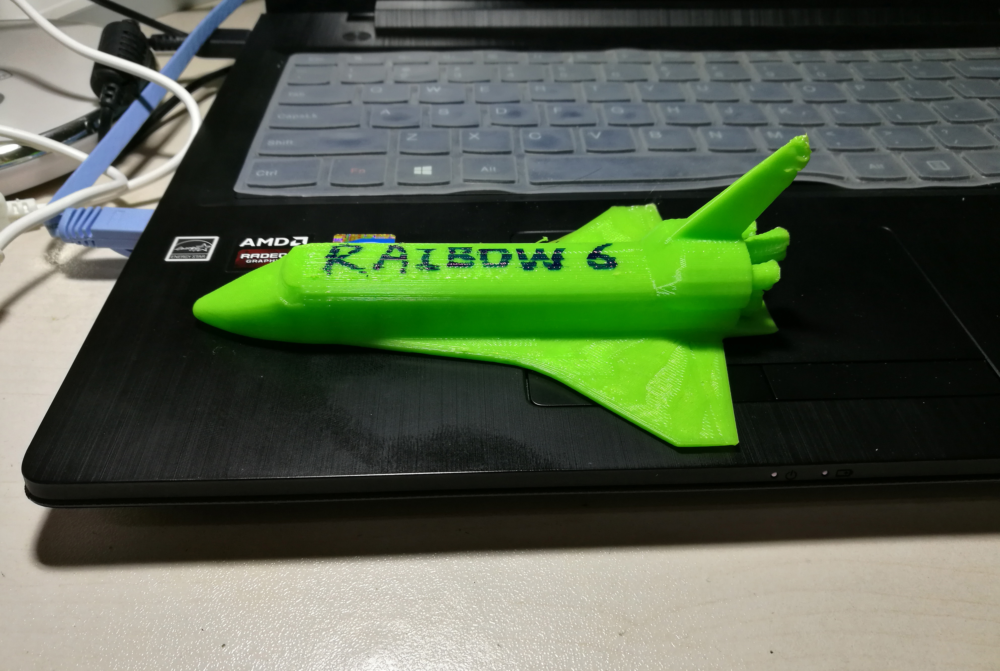

10月16日 key word:3D打印机
第一次使用3D打印机！我们非常激动并且做了一艘小型“宇宙飞船”。由于时间不太充裕,我们做了一艘非常非常非常小的宇宙飞船，打印它只花了8分钟。不管怎么说我们最终还是完成了~(附图片一张)。可能它看起来有点点...丑。但我们还是非常满意的。我们将来一定能做出一个更好的东西！（PS：图片过多，请大家耐心等待缓存~~~~）


10月22日 key word:Fushion360,Inkscape
第二节“C2T”课~这次我们学习使用了"Fushion360"和"Inkscape"。我们使用了一台激光打印机来打印了一个“招牌”然后...我们又犯了相同的错误。我们做的图案太小了因此没法再在上面打印字母了（或许也是由于我们没有认真听讲的缘故。。。。。。）下面有张图就是我们的作品（以及两位队员：帅不帅？哈哈！）其实也没有那么坏对吧~我们觉得这台机器非常有用。
秀一下我们制作的模型~

10月29日 key word:Arduino
第三次课~我们学习了如何使用UNO板，它有着很大用处，关于它的来历还有一段有趣的故事呢~戳这里查看Arduino的概况 和它密切相关的程序是Arduino.下图中长板是面包板，发红光的是UNO板。蓝灯是LED灯 。通过改变程序，我们还制作出了不同的灯光效果呢。

11月5日 key word:钥匙扣
打了一个好好看的钥匙扣~

11月26日 key word:space shuttle
飞机的高清重置版！！！与此同时我们所有人都在忙着准备“最终项目”（相信会惊爆亲的眼球哟~~~）。大家都在努力的制作3D模型，提出制作方案，每个人都很积极！
12月3日 key word:maker faire Chengdu
期待已久的maker faire！！！周成上午就去了会场，而其他四个人则是在1点30分左右到达。
刚进入门口
展品中一个挺有创意的拼接盆栽

图中这几个盆栽可没有看上去那么简单呢。触摸底面会发光

来自台湾的机器人格斗联盟！！也是我们驻足最久的地方


精彩的机器人格斗！！
在展厅比较里面的地方碰见了一位沙画师摆的展示摊位，她画的实在是太漂亮了！


我组大佬表示不服亲自上阵要与沙画师一决高下（我等高清重置版害怕.jpg）


我们出来以后还在附近逛了一下，东郊记忆是一个挺有意思的地方，它所呈现的情景（那时候工厂里机器的模型以及工人们工作时的情景）正是过去成都的样子，也是所有老成都人心中永不消散的回忆！所以它的建筑都是走的复古的风格，真是令人叹为观止、流连忘返啊！


12月10日 key word:Python
今天的课讲了关于python的一些入门知识。Python原义“蟒蛇”。Python也是一种计算机语言，它比我们正在学的C语言要更加高级，更“像”人类的语言。相对于C语言需要大量复杂程式来实现功能的缺点，python非常简洁易懂。久被C语言困扰的我们几乎是一使用就立刻喜欢上了它。
成员网站
你还可以查看我们组员的网站： 周成（da lao）：Magic Room